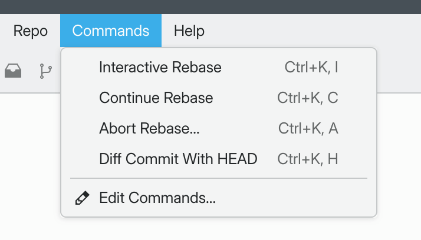
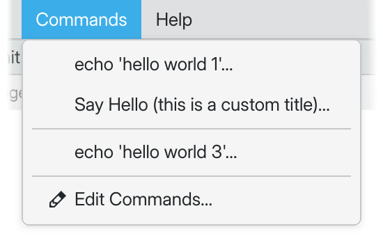
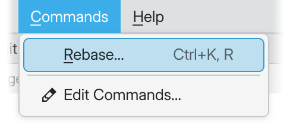

Custom Commands¶
New in v1.3.0.
You can augment GitFourchette’s capabilities with custom commands tailored to your workflow. These let you launch commands in a terminal directly from GitFourchette.
You can even send items that you manipulate in the UI as arguments to the commands. These include the selected commit, file, branch, etc.
To define custom commands, go to and simply enter some commands (one per line). Here is a useful sample to get you started:
# Feel free to copy/paste this sample into Custom Commands.
git rebase -i $COMMIT # &Interactive Rebase
git rebase --continue # &Continue Rebase
? git rebase --abort # &Abort Rebase
git diff $COMMIT HEAD # Diff Commit With &HEAD
After you click OK in the Settings, notice the Commands menu that appears in the main menu bar. You’re now ready to invoke your commands from this menu.

The Commands menu that appears once you’ve defined at least one Custom Command.¶
Tip
If you’ve chosen to hide the menu bar, you can also access your commands via a pulldown menu attached to the Terminal button in the toolbar.
Tip
To select which terminal program to use, go to .
Argument placeholders¶
You may use the following placeholders in your commands:
Token |
Description |
|---|---|
$COMMIT |
SHA-1 hash of the selected commit in the history |
$FILE |
Path to the selected file (relative) |
$FILEABS |
Path to the selected file (absolute) |
$FILEDIR |
Path to the selected file’s parent directory (relative) |
$FILEDIRABS |
Path to the selected file’s parent directory (absolute) |
$HEAD |
SHA-1 hash of the HEAD commit |
$HEADBRANCH |
Ref name of the HEAD branch |
$HEADUPSTREAM |
Ref name of the HEAD branch’s upstream |
$REF |
Name of the selected ref in the sidebar (local branches, remote branches, tags) |
$REMOTE |
Name of the selected remote in the sidebar |
$WORKDIR |
Path to the repository’s working directory (absolute) |
Titles and separators¶
The # character starts a comment until the end of the line.
If you add a comment after a command (on the same line), then the comment will serve as the title of the command in the menu.
To create a separator in the menu, insert a comment line of dashes
(#---) in between two commands.
echo 'hello world 1'
# The command above had no custom title.
# Let's define a custom title for the next one.
echo 'hello world 2' # Say Hello (this is a custom title)
# Let's add a separator in the menu.
# -----------------
echo 'hello world 3'

The example above rendered in the Commands menu (separator and custom title).¶
Keyboard shortcuts¶

A command titled &Rebase.¶
When you set a custom title for a command, you can define an accelerator key
for this command by inserting & before some letter in the command title.
For example, titling a command &Rebase would assign accelerator key R to the command.
You can trigger accelerator keys in one of two ways:
Press Ctrl K, then your command’s accelerator key (e.g. Ctrl K then R).
Note
Let go of Ctrl K before pressing the accelerator key.
Or, pull down the menu with Alt C, then press your accelerator key (e.g. Alt C then R).
Confirmation prompt¶
By default, when you trigger any custom command, GitFourchette will give you a chance to review the prepared command before it’s sent to the terminal (with the proper substitutions).
You can turn off this behavior by unticking the checkbox at .
If you’ve turned off the confirmation dialog for all commands, you can still
force it to appear before specific commands. To do so, prepend the commands of
your choice with the ? character. We strongly recommend doing this for
commands that may have destructive effects!
For example, ? git rebase --abort will always ask you to confirm,
even if you’ve unticked Ask for confirmation.